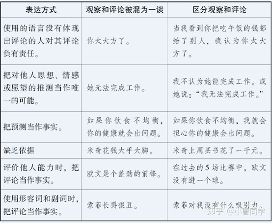
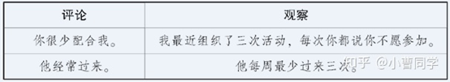

“也许我们并不认为自己的谈话方式是“暴力”的，但我们的语言确实常常引发自己和他人的痛苦。”
“大多数暴力的根源在于人们忽视彼此的感受与需要，而将冲突归咎于对方。”
非暴力沟通的4要素
1. 观察-我看到了什么。清楚的表述看到的事情，这个过程不做对他人/自己的评判。
2. 感受-我的感受如何。表达因为看到的事情，而导致的感受。
3. 需要-我的哪些需要导致了上述感受。清楚的表述自己的需要。
4. 请求-为了满足需要，我的请求是什么。提出明确具体的请求。
区分观察与评论

不带评论的观察，是人类智力的最高形式。
将观察和评论混为一谈，人们将倾向于听到批评，甚至会产生逆反心理。

“经常”、“很少”这样的词语可能混淆评论和观察。
如果我们的表达言过其实，别人就可能产生逆反心理，而不愿作出友善的回应。
区分评判和感受
清楚的表达感受，使沟通更加顺畅。
当我们用“我觉得”，往往不是表达感受，而是表达想法，或者判断。
示弱有助于解决冲突，在工作中也有助于解决问题。
示弱，是指表达自己紧张、不安等等情绪。
我们的需要，导致我们的感受
感受的根源在于我们自身。
我们的需要和期待，以及对他人言行的看法，导致了我们的感受。
批评往往暗含着期待。
对他人的批评实际上间接表达了我们尚未满足的需要。
如果我们通过批评来提出主张，人们的反应常常是申辩或反击。
反之，如果我们直接说出需要，其他人就较有可能作出积极的回应。
大多数人并不习惯从需要的角度来考虑问题。在不顺心时，我们倾向于考虑别人有什么错。
如果我们想利用他人的内疚，我们通常采取的办法是，把自己不愉快的感受归咎于对方。
家长也许会和孩子说：“你成绩不好让爸爸妈妈伤透了心！”言下之意是，他们快乐或不快乐是孩子的行为造成的。看到父母的痛苦，孩子可能会感到内疚，并因此调整行为来迎合他们。遗憾的是，这种调整只是为了避免内疚，而非出自对学习的热爱。
明确的请求
清楚地告诉对方，我们希望他们做什么。
提出的请求越具体越好。含糊不清的表达，让别人难以了解我们到底想要什么。
如果我们请求他人不做什么，对方也许会感到困惑，不知道我们到底想要什么。而且，这样的请求还容易引起别人的反感。
我们的意思和别人的理解有时可能是两回事。如果无法确定对方是否已经明白，我们可能就需要得到反馈。一旦对方的理解与我们的意思有所不同，我们就有机会作适当的补充。
请求没有得到满足时，提出请求的人如果批评和指责，那就是命令；如果想利用对方的内疚来达到目的，也是命令。
选择通过请求而非命令来表达愿望，并不意味着，一旦人们说“不”我们就不再去满足自己的需要。但它意味着，除非已经充分体会是什么妨碍了他人说“是”，我们就不会试图说服他们。
导致冲突的沟通方式
某些语言和表达方式具有负面影响。它们虽然能够满足某种愿望，但倾向于忽视人的感受和需要，以致彼此疏远和伤害。
道德评判
道德评判是用道德标准来评判他人，如果一个人的行为不符合我们的价值观，那他就被看作是不道德的或邪恶的。
批评、指责、辱骂、归类、比较以及评论都是在评判他人。
涉及道德评判的词语使用频率越高，暴力事件越频繁。
进行比较
如果想过上悲惨生活，就去与他人比较。
回避责任
我们对自己的思想、情感和行动负有责任。而很多表达方式让我们回避、减轻了个人责任。
“不得不/因为”这一短语，淡化了个人责任。例如：
审判纳粹战犯时，战犯回答“不得不做”，追问原因，回答“因为那是上级命令”。
为什么欺骗顾客？我不得不，因为老板叫我这么做
为什么喝酒？我不得不，因为同事让我喝
为什么吃巧克力？我不得不，因为吃的欲望征服了我
一旦意识不到我们是自己的主人，我们就成了危险人物。
用“我选择做…是因为我想要…”来代替 “不得不”。
强人所难
我们对别人的要求往往暗含着威胁：如果不配合，他们就会受到惩罚。
大多数人使用的语言倾向于评判、比较、命令和指责，而不是鼓励我们倾听彼此的感受和需要。
我们可以对孩子提出各种要求，但无法强迫孩子按照我们的期待生活。
我们可以通过惩罚来教训他们，但他们迟早想出办法来对付我们。
公司对员工的强硬规定也是如此。
异化的沟通方式源自等级社会或**社会，同时也支撑着它们。对于国王、沙皇、贵族来说，将臣民训练得具有奴隶般的精神状态符合他们的利益。“不应该”、“应该”和“不得不”这些表达方式特别适合这个目的：人们越是习惯于评定是非，他们也就越倾向于追随权威，来获得正确和错误的标准。一旦专注于自身的感受和需要，我们就不再是好奴隶和好属下。
如何表达我们的情绪如何倾听他人
当他人遭遇不幸时，我们常常急于提建议，安慰，或表达我们的态度和感受。
试图分析问题妨碍了我们与他人的联系。如果我们只关心别人说了什么，并考虑他的情况符合哪种理论，我们是在诊断人——我们并没有倾听他们。
倾听他人意味着，放下已有的想法和判断，一心一意地体会他人。
不论别人以什么样的方式来表达自己，我们都可以用心体会其中所包含的观察、感受、需要和请求。
一般来说，如果一个人在说话时有明显的情绪，他一般会期待得到他人的反馈。
如果我们自己是说话的那个人，我们不妨清楚地表明我们是否期待反馈。
有时，我们认为自己受到了指责，实际上，那些话是他人表达需要和请求的方式。
如果意识到这一点，我们就不会认为自己的人格受到了伤害。反之，如果一心分析自己或对方的过错，我们就会认为自己被贬低了。
在解决问题或询问他人的请求前，为他人的充分表达创造条件。如果过早地提及他人的请求，我们也许就无法传达我们的关心;甚至还会被看作是应付。
如果听的人很烦，说的人一般也会觉得无聊。
打断别人比假装在听，更符合对方的愿望。所有人都希望自己的话对人有益，而不想被人当做负担。
如何从羞愧中解脱
羞愧是自我憎恨的一种形式，出于羞愧的行为不是自由而快乐的行为。
如果我们认为自己“应该”怎么样，在大多数的情况下，我们也就封闭了自我。因为“应该”意味着我们别无选择。这使我们感到无奈和沮丧。同时，又心有不甘，不愿屈服。
一旦意识到自己尚未满足的需要——很可能是多个层面的需要，我们的身心状态就会发生明显的变化。我们不再感到羞愧、内疚和沮丧，而开始体会到别的情感。不论它们是忧愁、失望、恐惧、悲伤、挫折感或别的一其目的都是推动我们去满足需要和追逐梦想。
例如，如果发现我们痛骂自己：“你看你，又把事情搞砸了！”我们马上就可以问：“我什么样的需要没有得到满足？”
对他人的指责反映了我们遇到了挫折——他人的行为不符合我们的需要。
如何平息愤怒
愤怒是我们的思维方式造成的，核心是尚未满足的需要。
表达愤怒的四个步骤：
1. 停下来，除了呼吸，什么都别做；
2. 想一想是什么想法使我们生气了；
3. 体会自己的需要；
4. 表达感受和尚未满足的需要。
用“我生气是因为我需要……”来取代“我生气是因为他们……”
当我们要惩罚别人的时候，想一想“我希望他基于怎样的原因去做我想要他做的事情？”，就会发现惩罚其实是很难实现我们的目的的。
如何表达感激
在表达感激时，我们说出：
1. 对方做了什么对我们有益的行为；
2. 我们的哪些需要得到了满足；
3. 我们的需要得到满足后，我们是什么样的心情。
赞扬也可能造成人与人之间的隔阂。
在赞扬他人时，我们很少提示内心活动，而把自己放在了裁判的位置。所以，赞扬并不总是有助于深化彼此的联系。